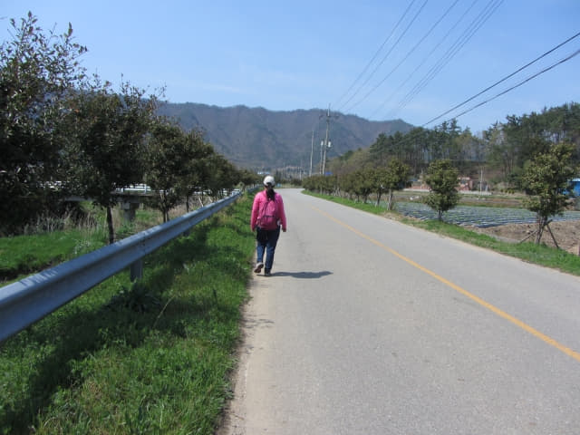
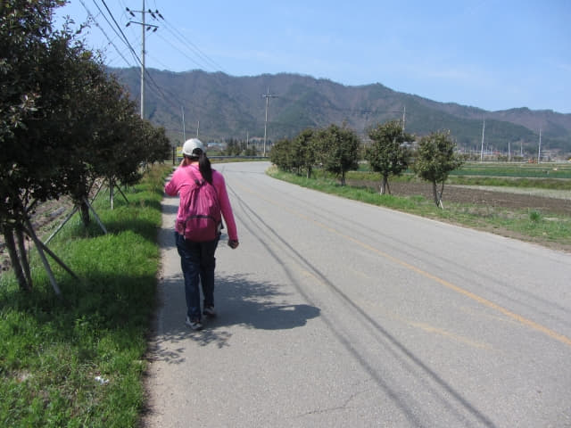

在離「寶城大韓茶園．第二茶園」約二公里外的「시장」的一間鄉村家庭式餐館匆匆吃完午餐, 望望手錶, 已經是下午二時五分, 按計劃, 我們必須搭乘下午 15:40 唯一的巴士班次返回寶城長途汽車客運站, 錯過了便要流落鄉郊! 所以我們現在只餘下約兩小時, 時間越來越緊迫了! 但最大問題是: 現在還不知道「寶城大韓茶園．第二茶園」在那裡? 要走多久? 回程的巴士站在那裡? 現在反而最重要是找到回程的「삼장」巴士站, 遊覽第二茶園已經是次要了!
看看地圖, 沿馬路一直走, 在「삼장」巴士站轉左走便是寶城大韓茶園．第二茶園。

離開「시장」村落, 來到一條馬路, 其實已經不知道我們現在的位置, 望望腳下右邊的影子, 太陽在左面, 再望望地圖, 很明顯循北面的方向走。
沿途的田地。
經過左邊的一道橋, 看來是重要的標示。

連忙看看地圖, 「시장」村落附近果然有一條橋的! 可以初步確定我們現在的位置。
繼續往前走一會。迎面是一個「Y」字形的路口, 和地圖完全脗合, 終於肯定我們現在的位置, 可以大膽向前走了!
接著在「Y」字形路口轉左一直走。
肯定方向正確, 可以由她帶路了。


左邊的小路是去「꽃들펜션」, 不知是什麼地方? 會否是老人院?
繼續往前走, 看來頗遠的。
回程的「삼장」巴士站
哈哈~~~ 終於看到回程的「삼장」巴士站, 這時才鬆了一口氣。
巴士站沒有巴士時刻表, 唯有相信 Naver Map 了, 大佬, 一定要準確呀! 望望手錶, 約下午二時二十五分, 估計離巴士靠站還有個半鐘, 應該有足夠時間往寶城大韓茶園．第二茶園遊覽。

接著馬上沿「삼장」巴士站旁的馬路走。
還沒有茶園的蹤影, 按地圖所示, 應該在馬路的左邊。
哈哈~~ 又看到黃澄澄的油菜花田。由旅程第一天開始, 已經看到漂流的油菜花, 數一數, 今天已經是第十七天了, 仍然可以看到, 真是十分滿足。
油菜花田中有一條小路, 按路口豎立了「寶城大韓茶園．第二茶園」的標示, 看來快到達了!
哦! 她看不到這路標, 還一直向前走到老遠的!
「喂喂~~~~~~~~~~~~~~~~~! 走過龍啦! 里度呀!!!!!」唉! 幾乎喊破喉嚨。

等她掉頭回來, 轉左沿花田走。
寶城大韓茶園．第二茶園
來到另一個分叉路口, 望望右邊, 已經看到不遠處小路兩旁蒼翠茂盛, 一簇簇整齊低矮的茶樹, 那裡很明顯是茶園! 終於到達啦!


{kind=link}